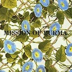

Top 100 Debut Albums (Part One: 100 to 81)
Welcome to the first part of what is undoubtedly No Ripcord’s biggest ever feature. Over the next five days, we will be posting our very first Top 100 staff list, the subject of which is the debut album. We’ve been keen to put together a special staff list for some time, but could never quite settle on a topic. Best of Decade lists have been done to death; Best of Genre lists are by definition narrow in their scope; Best Musician lists belong in specialist tech/gear publications. Then someone came up with the idea of a looking at debut albums. Extensive collaborative lists on this topic are few and far between, and we liked the idea that a number of the usual suspects (Radiohead, The Beach Boys, The Rolling Stones, even Dylan and The Beatles) weren’t automatic favourites for the number one spot. In fact, we couldn’t really begin to predict what the eventual top ten might look like.
Thirty-four writers submitted ranked top 40 lists. The votes were tallied up and the resulting top 100 is the result of this democratic process. While none of us will agree with every single inclusion, I am confident that the finished list represents the views of the No Ripcord staff.
We all hope you enjoy the list, its accompanying series of Spotify playlists, and the additional debut-themed features that we’ve be coming up later in the week. This took an enormous amount of work to put together and we’d be very grateful if you could share it with your friends and get involved in the debate using the Disqus function at the foot of the page. (David Coleman, Editor-in-Chief)
[Part One: 100 to 81] [Part Two: 80 to 61] [Part Three: 60 to 41] [Part Four: 40 to 21] [Part Five: 20 to 1]
100. ELVIS PRESLEY
Elvis Presley
(RCA Victor, 1956)
Any purist like myself would consider a good collection of the early Sun sides to be Elvis’ true debut, but this record made for RCA has the official honor. What the 7 newer recordings (the rest were unreleased Sun tracks) lack in atmospherics they compensate for with energy and feeling. The suits hadn’t figured out yet how to tame him, so his take on Blue Suede Shoes, for instance, has all the raw energy of the truck driver that walked into Sam Phillips studio a couple years before. In the end, this may not be the best album in rock history, but it’s hard to say it’s not the most important. (Alan Shulman)
99. THE POSTAL SERVICE
Give Up
(Sub Pop, 2003)
In 2003, The Postal Service released its first and so far only album, Give Up, and fans have been clamoring for a follow-up ever since. Give Up embraces both artists’ individual strengths. Gibbard provides strong lyrics and vocals similar to those that fueled Death Cab’s success, while Tamborello’s electronic rhythms complement Gibbard nicely while shining in their own right. The combination of these two styles provided a freshness that clearly resonated with listeners. While Gibbard and Tamborello have been reticent on any plans for a second album, the fact that such demand remains almost a decade later speaks to the duo’s strength. (Andrew Davison)
98. JAMES BLAKE
James Blake
(ATLAS / A&M, 2011)
I have no idea if anyone will care about James Blake in five years. The information age has exponentially reduced the number of musicians that spend entire careers in obscurity. At the same time, the Internet has given a platform to a seemingly endless glut of crap. But if I had to bet on anyone having the talent that longevity demands, I’d bet on young Mr. Blake. His self-titled debut is a reimagining of familiar elements melded together into something that doesn’t resemble any of them in particular. Blake takes classic R&B, soul, and deconstructs them through the minimalist psychedyllya of dubstep. It’s probably one of the most subtle records on this list; there are no rock anthems, no radio hits or club singles. What we have here is a collection of lean, impeccable songs that deserve to be remembered, even if it’s through decades of remixes, covers and episodes of Grey’s Anatomy. (Alejandro Martinez)
97. BRUCE SPRINGSTEEN
Greetings From Asbury Park, N.J.
(Columbia, 1973)
At this early stage of his career, the Boss was frequently labelled with the “New Dylan” tag and it’s not too hard to see why when you see the amount of words that make up the songs here. At times, it seems like he’s struggling to get them all out, making for a thrilling sound of youthful excitement. However, even at this age, he could still write a killer pop song, as seen when Manfred Mann’s Earth Band took Blinded By The Light to the top of the US charts. It’s Hard To Be a Saint In The City and Growin’ Up also hinted at the themes he had would examine in greater detail on an extraordinary decade-long journey of artistic growth that would take him from the oceanfront at New Jersey to the bleak wastelands of Nebraska. (D.C. Harrison)
Playlist: It’s Hard To Be A Saint In The City
96. DE LA SOUL
3 Feet High And Rising
(Tommy Boy / Warner Bros, 1989)
The cover of 3 Feet High and Rising is pleasingly cartoonish for a hip-hop album, particularly one released in a year in hip-hop more famous for the birth of gangsta rap (via Straight Outta Compton). Producer Prince Paul’s pioneering use of nostalgia-inducing soul samples and cut-up beats paved the way for 90s revolutions in sampling, and it’s just a gorgeous piece of laid-back summer rap (Eye Know in particular might be the loveliest beat ever). Although De La Soul ended up distancing themselves from their hippie-ish “D.A.I.S.Y. Age” ethos (da inner soul, y’all), with a more complicated rapping style, they’d made a uniquely playful rap record, that’s never quite been paralleled. (Stephen Wragg)
95. GOLDFRAPP
Felt Mountain
(Mute, 2000)
Waiting for Felt Mountain to come out drove me half mad. In August 2000, two weeks prior to its release, I had watched Goldfrapp play a Mute Records showcase at the ICA in London. During Pilots – a swooning, otherworldly epic that occupies the same lucid, half-awake territory as Nancy Sinatra’s You Only Live Twice, a mirror ball scattered panes of white light across the ceiling. I wanted to own that record so badly it hurt. The album, when it finally arrived, was like an artefact from a parallel universe. Nine baroque art house pop songs – panoramas of understated grandeur – with a strangely Austrian feel . From Lovely Head with its whistled intro, strong allusions to oral sex and kettle drum pounding like a heartbeat – to the queasy chapel of rest organ of Horse Tears. these songs seemed to come from a truly original place, as if their architects – Alison Goldfrapp and Will Gregory – had been holed up somewhere, isolated from any external intrusion that might taint their vision. Felt Mountain has a bucolic, outdoorsy feel that pre-dated new folk and felt at odds with the more urban music of the time. The tile song relocates the Blade Runner soundtrack to an alpine meadow, with watery splashes of synth, discrete electronic buzzes and warbles, an intermittent whiplash beat, and Alison’s vocal, crystal clear like a mountain stream, pitched somewhere between a church choir soprano and a faraway yodel. Goldfrapp went on to make more commercially successful albums and exert a broad influence on electro pop. So far, they have never made an album quite as haunting and strange as this one. (Sam Redlark)
94. JOANNA NEWSOM
The Milk-Eyed Mender
(Drag City, 2004)
Not everyone is a fan of Joanna Newsom’s shrill, Weird Sisters kind of vocals, but that didn’t stop The Milk-Eyed Mender from becoming one of the most highly-rated folk albums of the last decade. To make harp music sound modern and interesting was in itself quite an achievement, but the classically-trained Newsom genuinely is a brilliant musician. Her melodies are intricate and expansive; top that off with hyper-literary (if occasionally impenetrable) lyrics, and you have yourself a fascinating album. The production leaves a little to be desired – when Newsom’s voice hits the highest ranges there’s some noticeable distortion – but the all-round quality of the music more than makes up for it. (Joel Stanier)
Playlist: Not available on Spotify
93. THE DECEMBERISTS
Castaways And Cutouts
(Hush, 2002)
While The Decemberists have gone on more of a prog-rock romp over the last few years, Castaways and Cutouts is a simple, strong pop album. The songwriting, set apart by those English student lyrics, is top-notch, and there’s a real sense that this is a band with a strong grasp of melodic folk music. The instrumentation is lush and engaging, Colin Meloy’s vocals are capturing, and the whole thing flows with an unusual ease. Importantly, Castaways and Cutouts set the stage for one of the success stories of the early 2000s indie movement, rendering the band and the album talking pieces and not just another strong pop group. (Matt Montgomery)
Playlist: Here I Dreamt I Was An Architect
92.ANIMAL COLLECTIVE
Spirit They’re Gone, Spirit They’ve Vanished
(Animal, 2000)
Having shot into the realms of indie-stardom in 2009 with their album Merriweather Post Pavilion, most people seemed unaware that Animal Collective had actually been around for 9 years prior to this, with a crazily varied back catalogue of weird and wonderful pseudo-pop experimentation. What’s particularly surprising about Spirit They’re Gone... is that compared to the albums that followed it (Danse Mannatee, Hollinndagain and Campfire Songs) it actually sounds much more like contemporary Animal Collective, featuring real songs, some of which are quite accessible. It is by no means their best album, but it showcases the potential for what was to come in later years much more so than the sprawling noisy weirdness of the few albums that followed. (Andrew Hirst)
Playlist: April and the Phantom
91. MISSION OF BURMA
Vs.
(Ace Of Hearts, 1982)
Mission Of Burma’s full-length debut, Vs., is a fascinating listen. From the band’s unapologetic critique of religion (New Nails) to their use of manipulated tape loops (Secrets), the band, comprised of Clint Conley, Roger Miller, Peter Prescott and Martin Swope, nurtured a punk rock ideal and grew it into something rather profound. Mission Of Burma’s structures toyed with progressions, but employed a very raw, very unpolished methodology that was cerebral sans the typically unavoidable tendency toward pretension. Using subtle builds (Trem Two), almost danceable punk tempos (Learn How) or abrupt, guttural phrasing (Fun World), Mission Of Burma were able to define post-punk as less an abandonment of simplified intensity than the implementation of enhancements that would not be readily accepted by a mainstream audience, thusly smartening the music without selling it out. For me, the transition from Mica to Weatherbox is one of the best and most enthralling moments of any album in rock n’ roll. (Sean Caldwell)
Playlist: That’s How I Escaped My Certain Fate
90. THE MARS VOLTA
De-Loused In The Comatorium
(Gold Standard Labs, 2003)
“EXOSKELETAL JUNCTION AT THE RAILROAD DELAYED!” Omar and Cedric, free from the imprisonment of At The Drive-In, finally get their chance to make the music that’s surely been haunting them for years. Cedric relearns how to sing melismatically, Omar buys a few more pedals. Add Hipgnosis and Rick Rubin and you’ve got De-Loused in the Comatorium. The album is a tribute to Julio Venegas, a friend of there’s that committed suicide in El Paso after falling into a coma caused by amphetamines. Pink Floyd and The Who could’ve never dreamed of such a concept. The music screams in an uplifting, psychedelic whirlwind of chaos. (Michael Iovino)
Playlist: Roulette Dares (The Haunt Of)
89. AZTEC CAMERA
High Land, Hard Rain
(Sire, 1983)
The heart of the adolescent mind, as Alice Cooper puts it, is “in the middle of life,” trapped between being both “a boy and a man.” There’s a dichotomy in Aztec Camera’s 1983 debut that captures this absurd disposition. With the whimsical poetry of a teenage romantic and the balanced wisdom of an old soul, High Land, Hard Rain is an album full of life, love and wonder – all of which comes from the nineteen year-old frontman Roddy Frame. Roddy Frame and Aztec Camera may not be household names by any means, but when a single LP captures the potent zest and romanticized state of being that is one’s late adolescence, as well as breaks from the staunch cynicism of the then-disintegrating punk era, it’s a wonder that it doesn’t find its way into everyone’s collection. (David Hogg)
88. BRITISH SEA POWER
The Decline Of British Sea Power
(Rough Trade, 2003)
I’ve followed the career of this band with great interest, and they remain one of the few contemporary bands whose next step I eagerly anticipate. Back when they were starting out, they were a curious bunch of lads who took hook-laden indie rock tunes and added lyrics about World War II bombers, Liberace and Russian writers being horrid to insects. I’m not sure they were ever again as immediate as this, as their debut had plenty to lure in casual listeners. Remember Me, Fear of Drowning and Carrion were as good as it got in the middle part of the last decade. (D.C. Harrison)
87. DIZZEE RASCAL
Boy In Da Corner
(XL, 2003)
Until Dizzee Rascal released Boy In Da Corner in 2003, British hip-hop was still something of a laughing stock. Dizzee changed that with a remarkably mature and brutal look at life in early 20th Century urban Britain. It pulls no punches and is disarmingly candid, but it’s the marriage of Dizzee’s ferociously spat lyrics and stark beats that elevate it to classic status. A worthy winner of that year’s Mercury Music Prize, Boy In Da Corner is an impossible-to-ignore announcement of a ground-breaking talent onto the scene – has there ever been a more effective call to arms than the “OI!” that opens Fix Up, Look Sharp? Dizzee may have left behind East London and its deprivation, lack of prospects, gangster wannabes and girls out for what they can get, but we still have this document of what life was – and still is – like for countless disenfranchised teens with no direction. (Joe Rivers)
86. THE SPECIALS
Specials
(2Tone, 1979)
The Specials were an interracial band, but the 2Tone logo also defined the light and darkness in the music, which blended infectious ska and reggae rhythms with punk angst. The album’s songs were a soundtrack for hard times. They offered liberation, a respite from a world of dole queues, right-wing agendas, and National Front rallies. What could poor black and white kids do but unite in decrying these ills? Through sheer DIY gumption, The Specials built a successful path for themselves and the ska bands that came in their wake. Sadly, the original lineup broke up after two albums, and to this day there’s a great rift between Jerry Dammers and the other founding members. It’s a terrible shame; in a world teetering on self-destruction, they are missed more than ever. (Angel Aguilar)
Playlist: A Message To You Rudy
 85. TORI AMOS
85. TORI AMOS
Little Earthquakes
(Atlantic, 1992)
Tori Amos first achieved solo success with her 1992 debut, Little Earthquakes. After the previous decade, which had seen an emphasis on electronic production and studio technology, the 90s saw the renaissance of the singer-songwriter, and Tori formed an important part of the new wave, with her therapy-speak lyrics, kooky persona and piano-led arrangements. Her fearless take on taboo subjects (including religion and her own rape) led to cult appeal and critical acclaim. The girl and her piano template has spawned many artists since, but few of them have recorded anything as brave or as cathartic as the rustic rhapsodies of Little Earthquakes. (Gary McGinley)
Playlist: Silent All These Years
84. JOSÉ GONZÁLEZ
Veneer
(Imperial, 2003)
Few would be able to manage an acoustic cover of indie-electronica darlings The Knife (Heartbeats), or even the trip-hop legends Massive Attack (Teardrop). González manages to create versions that not only add reflective and moody dynamics, but also ones that surpass the originals in emotional gravity. In this light, Veneer is a masterpiece of Zen-like proportions, with lyrics that read like parables and guitar strumming that repeats like a mantra. The other songs on Veneer are of course originals, and in some way, González struck a chord with his minimalist folk, as Veneer has gone on to become a platinum-selling album in the UK. For González, however, it’s apparent that Veneer is a personal affair that does not set out to captivate audiences – for this reason, it’s probably one of the most direct and honest records of the 21st century, and it ranks well among the folk greats of the past century. (David Hogg)
83. NAS
Illmatic
(Columbia, 1994)
There’s a loophole in the hip-hop fabric that has been exploited by wannabe rappers nearly since the dawn of the genre. Since hip-hop is inherently supposed to be fun to dance to, so many rappers hide behind the beats and hope that a throbbing bass rhythm or kitschy string arrangement compensate for their complete ineptitude with words. With Illmatic, Nas set a few new benchmarks in hip-hop, not the least of which is that of robust lyrics. Nas manages a hyper-literate style without sacrificing flow, and every frank story is accompanied by characteristically bleak-yet-beautiful jazz-rap beats. Blink-or-you’ll-miss-it lines like “I switched my motto/Instead of sayin’ fuck tomorrow/That buck that bought a bottle could’ve struck the lotto” are all over Illmatic’s musical street corners. It’s an album that never ceases to reward its listener. (Andy Pareti)
82. VIOLENT FEMMES
Violent Femmes
(Slash, 1983)
The Violent Femmes are everything buskers ever dream of becoming. Thrashing away on street corners in Milwaukee, Gordon Gano et al perfected an energetic, ramshackle acoustic take on American alt.rock until being plucked from obscurity when spotted by the Pretenders’ James Honeyman-Scott. Chrissie Hynde offered them a slot and the rest is history. The album which followed was a blast of adolescent indie-punk reeking of Gano’s late adolescence with at least four cult classic singles. From Blister In The Sun to Gone Daddy Gone to the post-pubescent blast of Add It Up, Violent Femmes was familiar enough to appeal to the American teenager and innovative enough to hold up to thirty years of continued admiration. It all sounds (quite justifiably) like three teenagers with battered guitars and dustbin lids for drums, but as a manifesto of what acoustic DIY punk rock could be, there’s few finer. (Simon Briercliffe)
81. BLACK FLAG
Damaged
(SST, 1981)
By the time Black Flag released their first full-length debut Damaged, they’d already cemented for themselves a reputation for being notorious and were on their fourth and final singer, Henry Rollins. To this day, the impending onslaught of vibrant, crunchy mayhem that ensues once Greg Ginn plugs in and opens Rise Above makes me shiver. A very significant contribution to hardcore and rock music in general, Damaged transcends its genre’s overt lust of being only fast or only loud. The band’s attempts at doing more than just inciting violence is evident in their usage of jazz syncopation, involved rhythmic breakdowns and the album’s underlying complexities which hide underneath its overwhelming and abrasive exterior. Non-melodic and dissonant, but also wonderfully energetic and propulsive, Damaged trucks with no hesitation, one song after another, refusing to back down until its final track, Damaged I, wherein you get reduced to a slow burn. (Sean Caldwell)
. . .
[Part One: 100 to 81] [Part Two: 80 to 61] [Part Three: 60 to 41] [Part Four: 40 to 21] [Part Five: 20 to 1]
28 November, 2011 - 14:53 — No Ripcord Staff